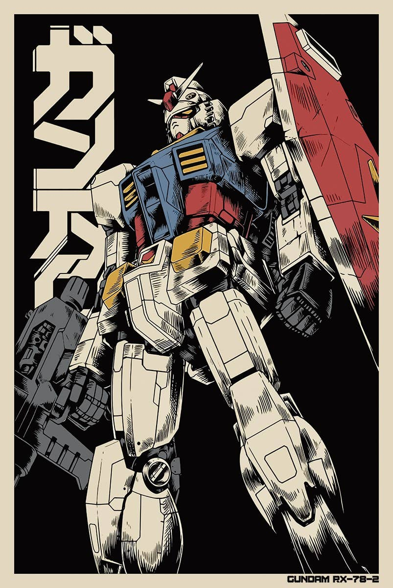
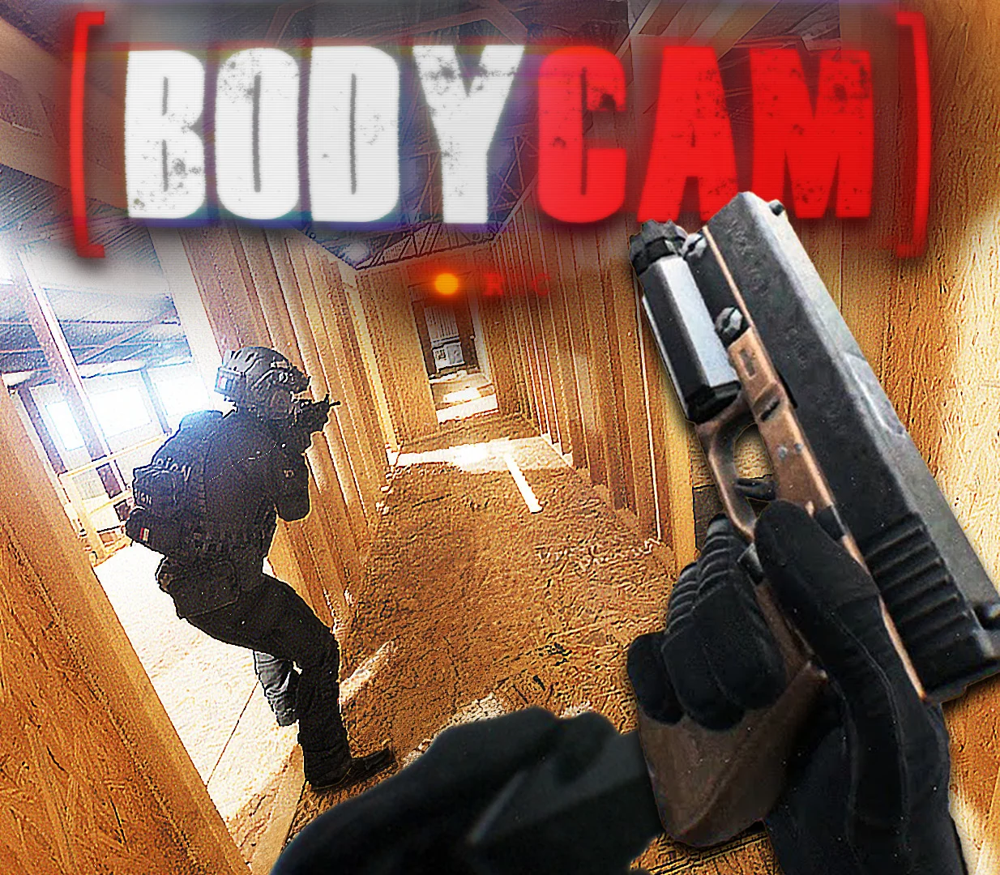

意图级控制
从“向前走”到“完成任务”，让人负责选择，让系统负责执行。
INTENT → ACTION我们让人类驾驶机器人。
从机甲游戏出发，把每一次意图、每一次动作、每一次结果，汇入一个真正可进化的具身智能系统。

今天的机器人仍然停留在“前方向盘时代”：关节映射、遥操作、互不通用的控制器。RealPilot 把驾驶员的意图，变成机器人真正理解的动作。
从“向前走”到“完成任务”，让人负责选择，让系统负责执行。
INTENT → ACTION游戏、仿真、真机共用一套可验证的物理和策略语言。
SIM → REAL每一次驾驶都带着结果回家，成为下一次动作的燃料。
PLAY → DATA → BETTERRealPilot Runtime 是机器人的驾驶 OS：给它一个统一意图入口，把感知、决策和动作组织成可迁移的驾驶能力。
任务级指令 → 意图解析 → 策略调度
运控策略推理，基模权重与技能库协同
接触真值、平衡、防摔、安全闭环
Unreal Engine / MuJoCo / Omniverse

《机械权证》让玩家先在真实物理里学会驾驶；PilotForge 让动作成为内容；PilotBench 让每一种本体都能在同一张榜单上被验证。
玩家获得更好的驾驶体验，机器人获得更丰富的意图—执行数据，RealPilot 获得跨本体的系统壁垒。
你玩的每一局，都会成为真实机器人下一次动作的起点。
— THE DRIVER'S PROMISE先让驾驶发生，再让能力沉淀，最后让标准扩散。每一个阶段，都有真实的机器人在场。
乒乓真机链路稳定运行，跨本体驾驶能力开始被同一套事实验证。
把真实物理做成任何人都能上手的驾驶体验，让第一批驾驶员进入系统。
PilotData、Runtime、PilotForge 形成开放生态，驾驶能力开始跨越本体。
让机器人拥有统一方向盘，让每一个人都能成为机器人的驾驶员。
我们正在寻找相信这件事的人：机器人不应该只是被观看的机器，也应该是人类可以亲手驾驶的未来。
访问 GitHub 组织 ↗